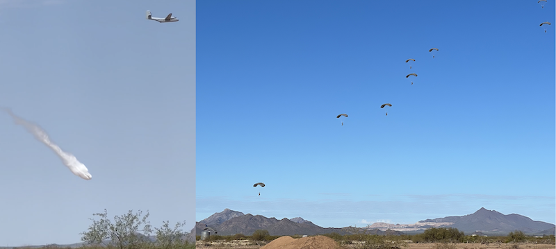
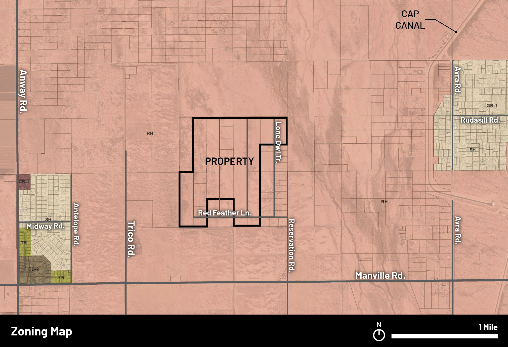

An airstrip is being proposed for development on Rural Homestead zoned land in the Avra Valley, just north of Manville and west of Reservation.
On Wednesday 27-AUG-2025 we held a Community Meeting at the Picture Rocks Community Center. This is the slide set we presented there. The Presentation includes videos, and you can have them run right from the slide show by clicking the left hand or top box, below. Or you can look at the individual slides in a "PowerPoint"-like formate (center, below). Finally, you can look at the individual videos from the presentation (right or bottom, below):
Presentation Slides (auto-run with 5s per slide) Presentation Slides (PPTX) Videos from the 27-AUG-2025 Community Meeting PresentationAirstrip on TV News:
Airstrip News VideosThe following letter outlines community opposition to this project:
Letter Describing the Project and Opposition to itWhite Paper outling why the proposed airport / airstrip is fundamentally inconsistent with Rural Homestead zoning based on the definitions in the Zoning Ordinance:
Why the Proposal is Inconistent with RH Zoning The land for development is already being used for a variety of purposes, including parachute training, helicopter training and aerial-drop training for water and suspected fire suppression chemicals:
Videos and Photos of Aerial Activity Currently OngoingWhere would the proposed airstrip be:
Video showing location of proposed airstrip These activities appear contrary to the letter and intent of Pima County Rural Homestead Zoning (see link, below), and the airstrip would further aggravate this inconsistent use of quiet, rural residential land:
Zoning Documents for Pima CountyFor more information, join us on Facebook:
Our FacebookHow to contact Pima County Board of Supervisors with questions, comments or opinions:
Pima County Board of Supervisors Contact InformationFor questions, also feel free to email us:
Email Us at northloneowl@gmail.comGeneral Documents:
Various Other DocumentsIn the News:
Living Desert Alliance Newsletter - 4-SEPT-2025 KVOA - 27 August 2025